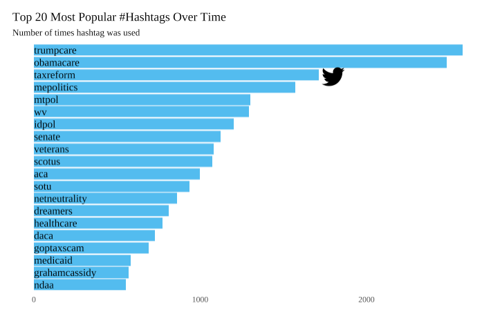
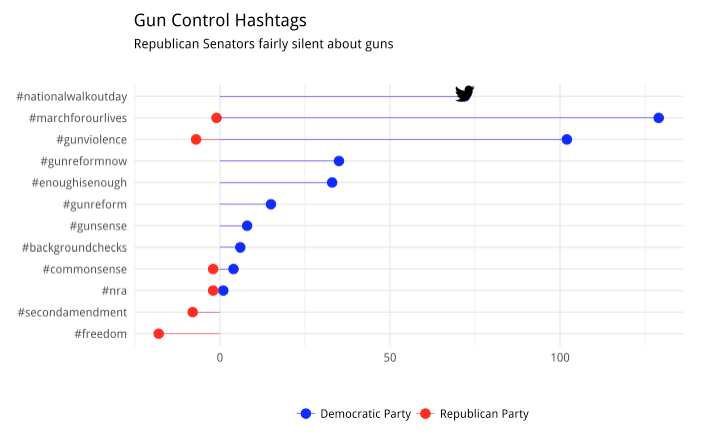
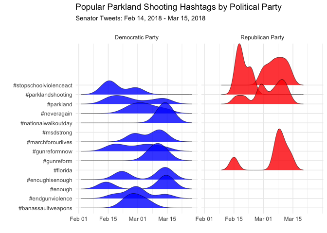

Senators -- they're just like us! Below, I analyze 95 U.S. Senators' Twitter data; data was collected through Twitter's API (which has limitations), so these tweets span roughly one year (up until March 2018). 46 Senators were Democrats, 47 Republicans and only two -- Bernie and Angus King -- were Independents.
Below ar the top 20 most common hashtags used by Senators in the dataset overall. Interestingly, “trumpcare” and “obamacare” are neck-in-neck for first place. “Taxreform” comes next, a topic that both parties likely tweeted quite differing opinions about. Other important tweets include “mepolitics”, “netneutrality” and “dreamers”; all large and controversial recent political topics.

To visualize the difference between Democrat and Republican use of gun related hashtags, I subset the data to only include the most common hashtags used in support of gun control and the most common hashtags used in support of gun rights. We can see that gun control hashtags like #nationalwalkoutday and #gunreformnow are most commonly used by Democrats while hashtags like #secondamendment and #freedom are used by Republicans. In general, it seems that Democrats voice their opinions on guns more frequently than Republicans.

To look into how Democratic and Republican Senators reacted specifically to the Parkland shooting, I narrowed the time-range for tweets to one month after the shooting and visualized the use of the most popular Parkland-related hashtags. Clearly, Democrats tweeted more about the shooting than Republicans did, yet Republicans seemed to tweet more about the “facts” (i.e. #parklandshooting and #florida) or descriptives of the shooting, whereas Dems tweeted more about the student-led march and ending gun violence.

Graphics were created using R. Code on Github.